Guide d'installation et de configuration
1. Avant de commencer
1.1 Votre parcours
- Je suis médecin ou responsable du cabinet : lisez ce guide en entier. Vous installez le logiciel, vous configurez le cabinet et vous créez les comptes.
- Je suis secrétaire : lisez les chapitres « Premier démarrage » et « Utiliser EL-HAKIM PRO sur plusieurs postes ». Pour le travail de tous les jours, passez ensuite au Guide d'utilisation.
1.2 Ce qu'il vous faut
- Un ordinateur sous Windows 10 ou Windows 11.
- Environ 1 Go d'espace libre sur le disque.
- Microsoft Edge (déjà présent dans Windows) : il sert à l'aperçu avant impression.
- Une imprimante qui accepte le papier A5 (ordonnances, certificats et la plupart des documents) et A4 (comptes rendus, courbes de croissance). Voir le Guide d'utilisation, section « Papier et imprimante ».
- Le fichier d'installation el-hakim-pro-setup.exe.
- Le fichier de la nomenclature des médicaments (fichier Excel), si vous voulez l'importer dès le premier démarrage.
1.3 Choisir l'organisation du cabinet
L'installation vous demande comment chaque ordinateur sera utilisé. Choisissez avant de commencer :
| Votre cabinet | Ce qu'il faut installer |
|---|---|
| Un seul ordinateur | Poste unique sur cet ordinateur. |
| Plusieurs ordinateurs (médecin, secrétariat…) | Serveur multi-postes sur l'ordinateur principal, celui qui garde les données. Les autres ordinateurs l'utilisent par le réseau du cabinet. |
| Un ordinateur de plus, pour un cabinet déjà équipé | Poste client sur cet ordinateur. Il utilise les données du serveur. |
Toutes les données (patients, consultations, rendez-vous, documents) sont gardées sur le poste unique ou sur le serveur. Le serveur doit être allumé, avec EL-HAKIM PRO ouvert, pour que les autres postes puissent travailler.
Réglez le fuseau horaire de Windows sur l'Algérie avant d'installer. Les heures des rendez-vous et des documents dépendent de ce réglage. Si le fuseau n'est pas le bon, l'installation vous prévient.
2. Installer EL-HAKIM PRO
2.1 Télécharger le fichier d'installation
- Ouvrez la page de la dernière version : https://github.com/yacami/el-hakim-pro-releases/releases/latest
- Dans la liste des fichiers, cliquez sur el-hakim-pro-setup.exe. Le téléchargement commence.
- Sur la même page, vous trouvez aussi les fichiers joints : la nomenclature des médicaments, les logos de spécialités et les guides.
Gardez une copie du fichier d'installation sur une clé USB. Elle vous servira pour équiper un nouvel ordinateur sans Internet.
2.2 Lancer l'installation
- Double-cliquez sur le fichier el-hakim-pro-setup.exe.
- Si Windows affiche « Windows a protégé votre ordinateur », cliquez sur Informations complémentaires, puis sur Exécuter quand même.
2.3 Choisir le dossier d'installation
- L'installation propose un dossier. Gardez-le, ou cliquez sur Parcourir… pour en choisir un autre.
- Cliquez sur Suivant.
Pour une mise à jour, gardez le même dossier que l'installation actuelle. Si EL-HAKIM PRO est déjà installé dans un autre dossier, l'installation s'arrête sans rien modifier et vous indique le bon dossier.
2.4 Choisir le rôle de cet ordinateur
La page Configuration réseau demande : « Comment ce poste sera-t-il utilisé au cabinet ? »
- Cochez une des trois cases :
- Poste unique : EL-HAKIM PRO n'est utilisé que sur cet ordinateur.
- Serveur multi-postes : les autres ordinateurs du cabinet utilisent les données de ce poste.
- Poste client : ce poste utilise EL-HAKIM PRO installé sur un autre ordinateur (le serveur).
- Pour un Poste client seulement : saisissez l'adresse du serveur dans Adresse du serveur (ex. 192.168.1.10). Vous trouvez cette adresse sur le serveur, dans Configuration › Identité › ACCÈS RÉSEAU LOCAL (voir le chapitre « Utiliser EL-HAKIM PRO sur plusieurs postes »).
- Cliquez sur Installer.
Pour un Serveur multi-postes, Windows vous demande votre accord pour régler le pare-feu (droits administrateur). Acceptez : sans cette autorisation, les autres postes ne peuvent pas se connecter. La règle créée n'ouvre que le port 3001, et seulement aux ordinateurs du réseau local.
Pour un poste client, l'installation vérifie que le serveur répond :
- « Adresse du serveur invalide » : l'adresse saisie n'est pas correcte. Corrigez-la (exemple : 192.168.1.10).
- « Le serveur … ne répond pas » : vérifiez que le serveur est allumé et qu'EL-HAKIM PRO y est ouvert. Vous pouvez continuer quand même.
2.5 Terminer l'installation
- Attendez la fin de la copie des fichiers. Pour une mise à jour, une sauvegarde complète est faite d'abord : cela peut prendre quelques minutes.
- Cliquez sur Fermer. Un raccourci EL-HAKIM PRO est créé sur le Bureau et dans le menu Démarrer.
En cas de problème pendant une mise à jour, tout est remis comme avant automatiquement. Les sauvegardes faites par l'installation sont rangées dans votre profil Windows, dans le dossier EL-HAKIM PRO Sauvegardes.
3. Premier démarrage
3.1 Se connecter
- Double-cliquez sur le raccourci EL-HAKIM PRO du Bureau.
- Dans UTILISATEUR et MOT DE PASSE, saisissez les identifiants de première connexion. Les identifiants de première connexion vous sont communiqués avec votre licence.
- Cliquez sur S'IDENTIFIER.
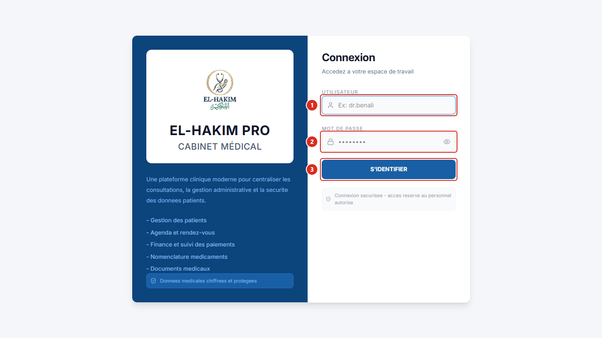
Changez ce mot de passe dès la première connexion (voir « Changer le mot de passe de l'administrateur » ci-dessous).
3.2 Renseigner le cabinet avec l'assistant
Au premier démarrage, l'assistant Configuration d'EL-HAKIM PRO s'ouvre. Il a quatre étapes.
Étape 1 : Identité du Cabinet
- Saisissez le Numéro d'Ordre National.
- Saisissez votre nom dans Dr. (FR), et en arabe dans الدكتور (AR).
- Saisissez votre spécialité dans Spécialité (FR), et en arabe dans التخصص (AR).
- Cliquez sur Suivant.
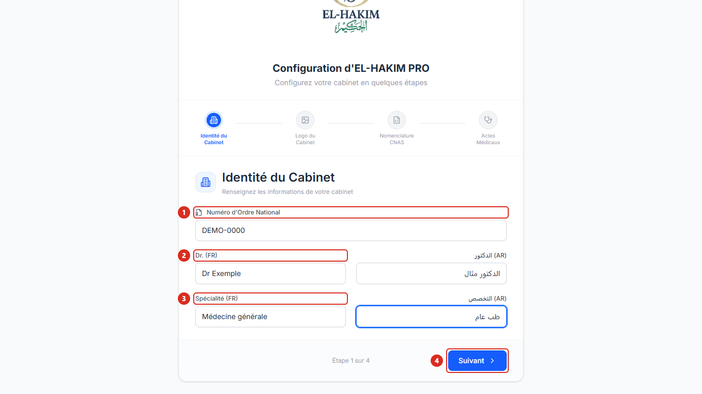
Étape 2 : Logo du Cabinet
- Cliquez sur Cliquez pour sélectionner votre logo, puis choisissez l'image (PNG ou JPG, 300 × 300 pixels recommandés). Ce logo apparaît sur vos documents imprimés.
- Saisissez le Téléphone du cabinet.
- Saisissez l'Adresse (FR).
- Cliquez sur Suivant.
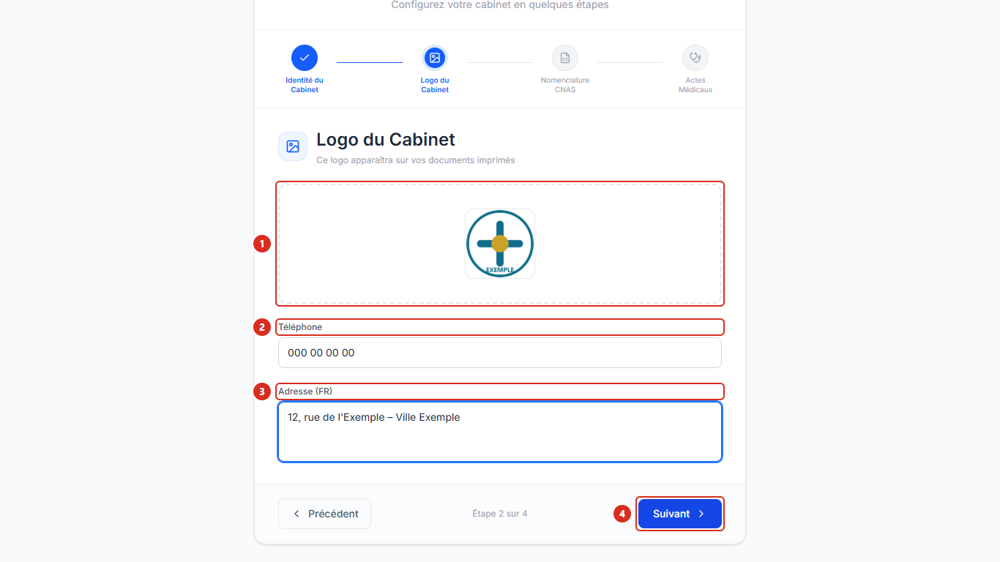
Vous n'avez pas de logo ? Les logos de spécialités font partie des fichiers joints de la version (fichier logos-specialites.rar).
Étape 3 : Nomenclature CNAS
- Cliquez sur Importer le fichier de nomenclature, puis choisissez le fichier Excel de la nomenclature (Excel ou CSV accepté). Attendez le message Importation réussie ! avec le nombre de références disponibles.
- Vérifiez les ACTES ET TARIFS proposés. Corrigez un prix si besoin, ou cliquez sur Ajouter un acte.
- Cliquez sur Suivant (en bas de la page).
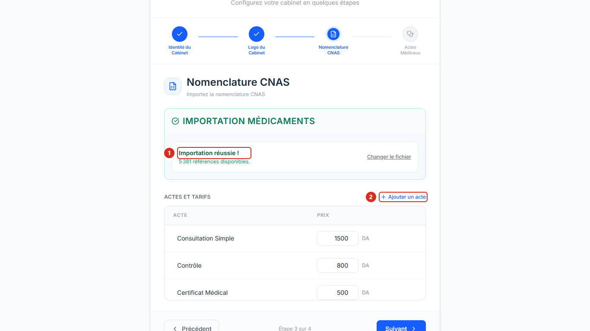
Étape 4 : Finalisation
- Vérifiez le résumé affiché sous Prêt à démarrer !.
- Cliquez sur Terminer la configuration.
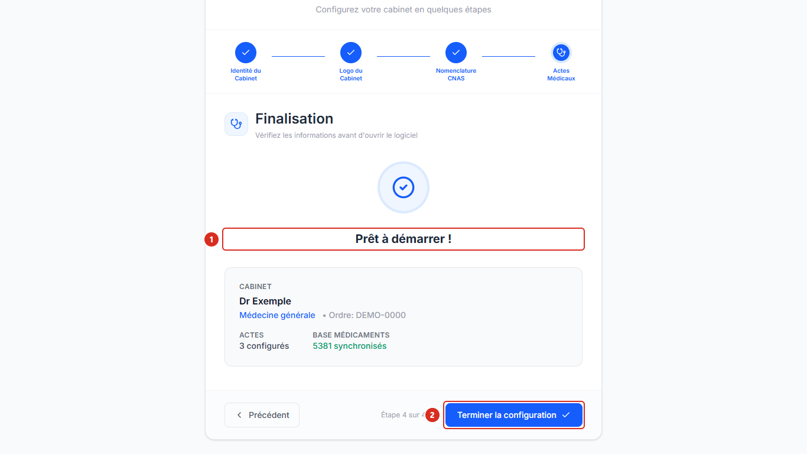
Tout ce que vous saisissez dans l'assistant se modifie plus tard dans Configuration. Vous pouvez aussi importer la nomenclature plus tard, depuis l'écran Médicaments.
3.3 Changer le mot de passe de l'administrateur
- En bas à gauche, cliquez sur votre nom (Administrateur Cabinet). Un menu s'ouvre : Modifier mot de passe, Mon profil, Se déconnecter.
- Cliquez sur Modifier mot de passe.
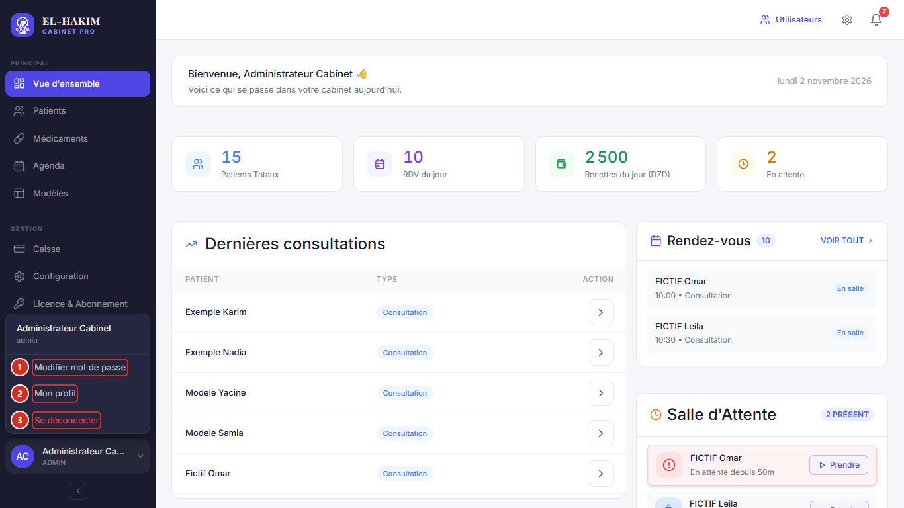
- Dans Sécurité & Mot de Passe, saisissez le MOT DE PASSE ACTUEL (la première fois : celui des identifiants de première connexion).
- Saisissez le NOUVEAU MOT DE PASSE.
- Saisissez-le une seconde fois dans CONFIRMER LE NOUVEAU.
- Cliquez sur Enregistrer les modifications.
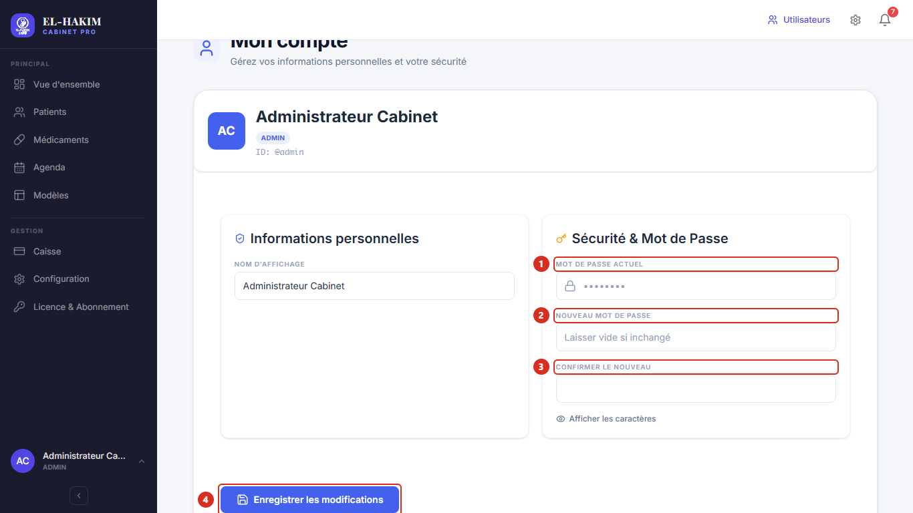
Notez le nouveau mot de passe dans un endroit sûr. Choisissez un mot de passe que vous seul connaissez : au moins 8 caractères, avec des lettres et des chiffres.
4. Configurer le cabinet
Pour ouvrir la configuration, cliquez sur Configuration dans le menu de gauche. L'écran a trois onglets : Identité, Tarifs et Sécurité.
4.1 Identité du cabinet et logo
- Cliquez sur l'onglet Identité.
- Pour changer le logo, cliquez sur Importer un logo et choisissez l'image. Supprimer le logo le retire.
- Modifiez les champs voulus, puis cliquez sur Enregistrer.
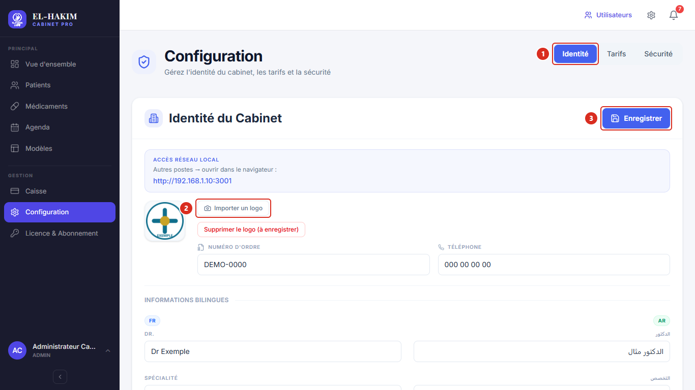
Les modifications ne sont prises en compte qu'après un clic sur Enregistrer. Le message MODIFICATIONS ENREGISTRÉES le confirme.
4.2 En-tête des documents
Plus bas dans l'onglet Identité, la partie INFORMATIONS BILINGUES contient ce qui est imprimé en haut de vos ordonnances, certificats et autres documents : votre nom, votre spécialité et l'adresse, en français (FR) et en arabe (AR).
- Faites défiler l'onglet Identité jusqu'à INFORMATIONS BILINGUES.
- Complétez les champs en français et en arabe.
- Vérifiez le résultat dans les aperçus de l'en-tête affichés plus bas.
- Cliquez sur Enregistrer (en haut de l'onglet).
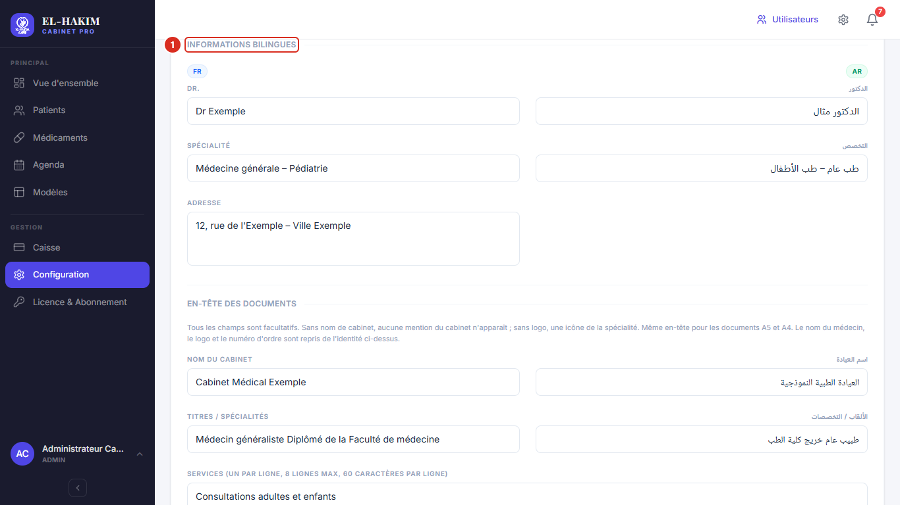
4.3 Actes et tarifs
Les actes et leurs prix sont proposés au moment de l'encaissement, à la fin de chaque visite.
- Cliquez sur l'onglet Tarifs. La Nomenclature des actes s'affiche.
- Pour un nouvel acte, cliquez sur Ajouter, puis saisissez le NOM DE L'ACTE et son PRIX (en DA). Le CODE est facultatif.
- Pour modifier un acte, changez son nom ou son prix directement dans sa carte.
- Cliquez sur Sauvegarder.
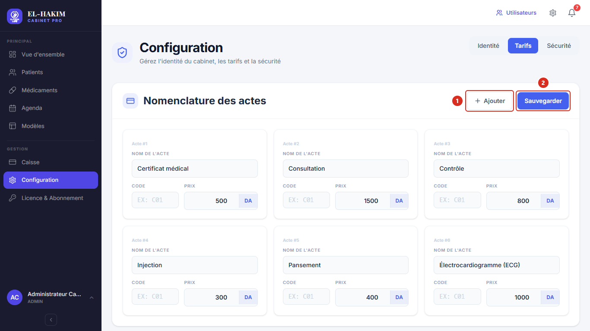
5. Créer les comptes des utilisateurs
Chaque personne doit avoir son compte. Le rôle décide de ce qu'elle peut voir et faire :
| Rôle | Pour qui |
|---|---|
| Médecin | Le médecin : tout le logiciel (consultations, ordonnances, documents, caisse, configuration), sauf la gestion des comptes. |
| Secrétaire | Le secrétariat : patients (données administratives), rendez-vous, agenda, salle d'attente, encaissements confiés par le médecin. Pas d'accès aux consultations ni aux documents médicaux (secret médical), ni à la Caisse, à la Configuration et à la Licence. |
| Administrateur | La personne qui gère le logiciel : tout, y compris les comptes (Utilisateurs). |
5.1 Ajouter un utilisateur
- En haut à droite, cliquez sur Utilisateurs. L'écran Gestion utilisateurs s'ouvre.
- Cliquez sur Nouvel accès.
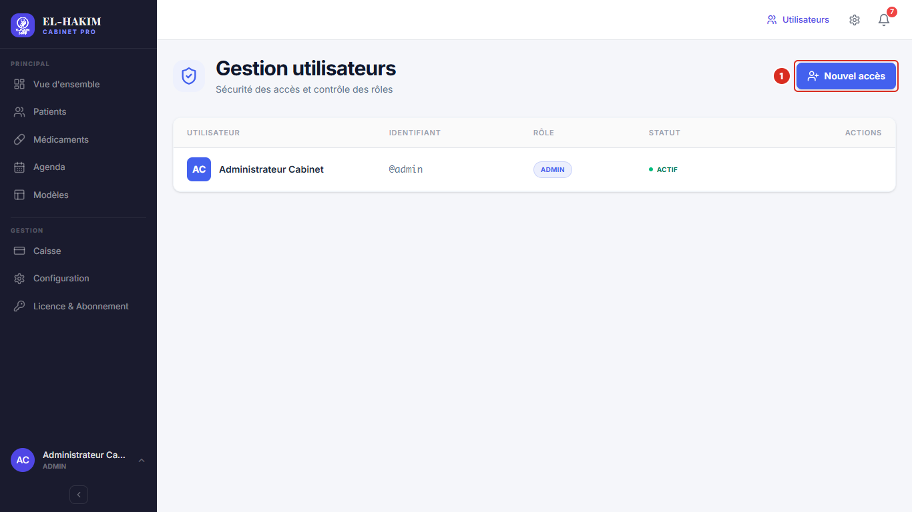
- Saisissez le NOM COMPLET de la personne.
- Saisissez son IDENTIFIANT : le nom qu'elle tapera pour se connecter.
- Choisissez son RÔLE : Médecin, Secrétaire ou Administrateur.
- Saisissez un MOT DE PASSE.
- Cliquez sur Valider les accès.
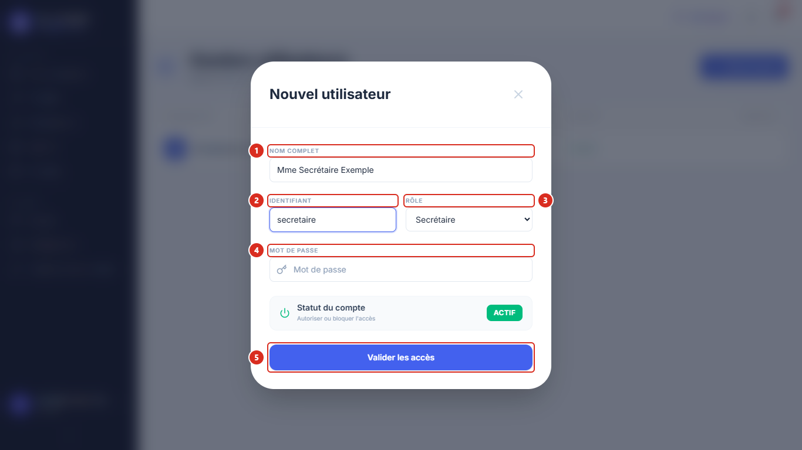
Statut du compte autorise ou bloque l'accès. Quand une personne quitte le cabinet, bloquez son compte : elle ne peut plus se connecter.
Ne partagez pas un compte entre plusieurs personnes. Chacun son identifiant et son mot de passe.
6. Importer la nomenclature des médicaments
La nomenclature est la liste des médicaments proposée quand vous rédigez une ordonnance. Si vous l'avez importée avec l'assistant, rien à faire. Pour la mettre à jour (nouvelle nomenclature publiée) :
- Dans le menu de gauche, cliquez sur Médicaments.
- Cliquez sur Importer depuis Excel, puis choisissez le fichier Excel de la nomenclature.
- Attendez la fin de l'importation : le nombre de références s'affiche à côté du titre Médicaments.
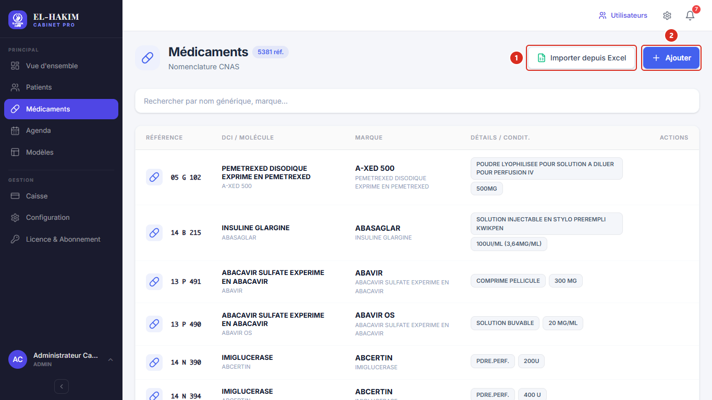
Le fichier de la nomenclature fait partie des fichiers joints de chaque version (voir « Mises à jour et fichiers joints »). Un médicament absent ? Ajoutez-le avec Ajouter.
7. Utiliser EL-HAKIM PRO sur plusieurs postes
Le serveur est l'ordinateur installé en Serveur multi-postes. Les autres postes se connectent à lui de deux façons :
- Avec EL-HAKIM PRO installé en Poste client (recommandé) : le poste ouvre EL-HAKIM PRO normalement, avec les données du serveur.
- Avec un navigateur (Microsoft Edge, Google Chrome) : sans rien installer, en ouvrant l'adresse du serveur.
7.1 Trouver l'adresse du serveur
- Sur le serveur, cliquez sur Configuration, onglet Identité.
- Lisez l'adresse sous ACCÈS RÉSEAU LOCAL, par exemple http://192.168.1.10:3001.
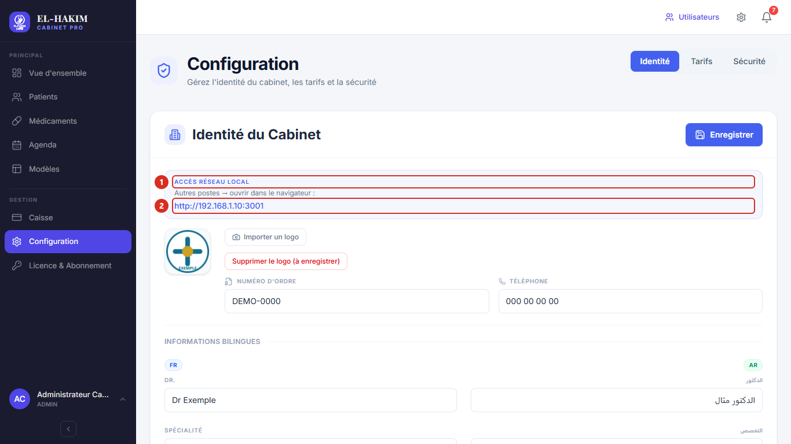
7.2 Se connecter depuis un autre poste avec un navigateur
- Sur l'autre poste, ouvrez Microsoft Edge ou Google Chrome.
- Dans la barre d'adresse, tapez l'adresse lue sur le serveur (exemple : http://192.168.1.10:3001), puis appuyez sur Entrée.
- Connectez-vous avec votre identifiant et votre mot de passe.
Ajoutez cette adresse aux favoris du navigateur pour la retrouver en un clic.
Si un poste ne se connecte plus, vérifiez dans cet ordre : le serveur est allumé ; EL-HAKIM PRO est ouvert sur le serveur ; les deux ordinateurs sont sur le même réseau ; l'adresse n'a pas changé (elle peut changer après un redémarrage de la box ou du routeur).
8. Licence
À l'installation, EL-HAKIM PRO fonctionne en Période d'essai (3 jours). Pour continuer ensuite, il faut une licence. Elle est liée à l'ordinateur (le serveur, dans un cabinet multi-postes).
8.1 Voir l'état de la licence
- Dans le menu de gauche, cliquez sur Licence & Abonnement.
- Lisez le TYPE de licence, la date d'EXPIRATION et les JOURS RESTANTS.
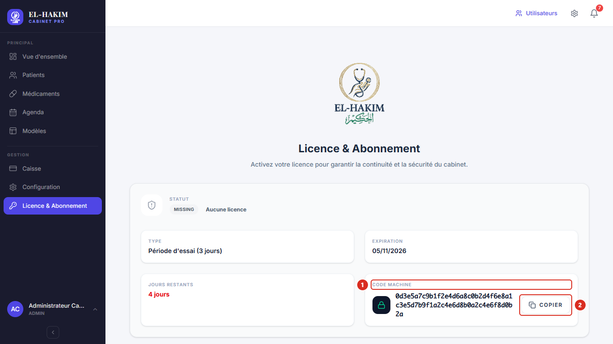
8.2 Demander une licence
- Dans CODE MACHINE, cliquez sur COPIER.
- Envoyez ce code à CWL-SOFT (voir le chapitre « Dépannage et assistance »). Vous recevez en retour un fichier license.json ou une clé d'activation.
8.3 Activer la licence
- Faites défiler jusqu'à Activer une licence.
- Cliquez sur Cliquez pour sélectionner license.json et choisissez le fichier reçu, ou collez la clé reçue dans CLÉ D'ACTIVATION.
- Cliquez sur Activer la licence.
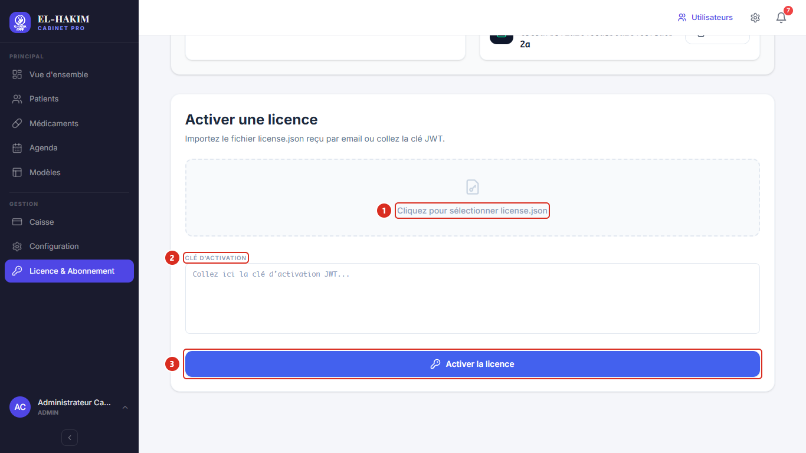
Quand la licence est expirée, EL-HAKIM PRO affiche l'écran Licence requise ou expirée au démarrage. Vos données sont conservées. Cet écran donne aussi le Code Machine et permet d'importer le fichier license.json ou de saisir la clé, puis de cliquer sur Activer.
9. Mises à jour et fichiers joints
EL-HAKIM PRO vérifie seul, par Internet, si une nouvelle version existe. Sans Internet, il fonctionne normalement : la vérification est simplement refaite plus tard.
9.1 Ouvrir la fenêtre des mises à jour
- Cliquez sur Configuration.
- En bas de l'écran, sous le numéro de version, cliquez sur Mises à jour et fichiers joints….
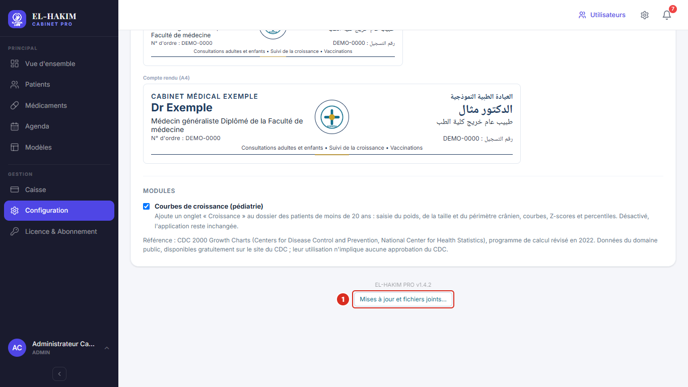
La fenêtre Mises à jour s'ouvre :
- Vérifier automatiquement les mises à jour : cochée, la recherche se fait seule.
- Rechercher une mise à jour : lance la recherche tout de suite.
- Fichiers joints : la liste des fichiers fournis avec la version (nomenclature, logos, guides) et leur état.
- Ouvrir le dossier des fichiers joints : ouvre le dossier où ces fichiers sont rangés sur l'ordinateur.
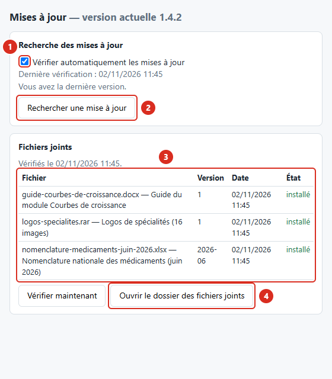
9.2 Installer une nouvelle version
Quand une version est disponible, la fenêtre affiche Nouvelle version … disponible et la liste des nouveautés.
- Fermez les dossiers patients ouverts et terminez la visite en cours.
- Cliquez sur Mettre à jour maintenant. EL-HAKIM PRO télécharge la version, la vérifie, se ferme, s'installe, puis se rouvre.
- Pour le faire plus tard, cliquez sur Plus tard.
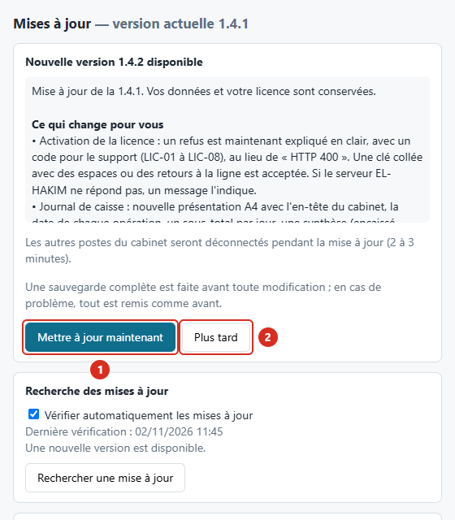
Dans un cabinet multi-postes, mettez d'abord à jour le serveur, puis les postes clients. Pendant la mise à jour du serveur (2 à 3 minutes), les autres postes sont déconnectés.
Une sauvegarde complète est faite avant toute modification. En cas de problème, tout est remis comme avant.
10. Sauvegarder et restaurer les données
EL-HAKIM PRO ne fait pas de sauvegarde automatique de vos données au quotidien. Faites une sauvegarde au moins une fois par semaine, et gardez-la hors de l'ordinateur (clé USB, disque externe).
10.1 Faire une sauvegarde
- Sur le poste unique ou sur le serveur, cliquez sur Configuration, puis sur l'onglet Sécurité.
- Dans Coffre-fort, sous Exporter archive, cliquez sur Générer la sauvegarde.
- Choisissez où enregistrer le fichier sauvegarde_cabinet_AAAA-MM-JJ.zip (la date du jour est dans le nom).
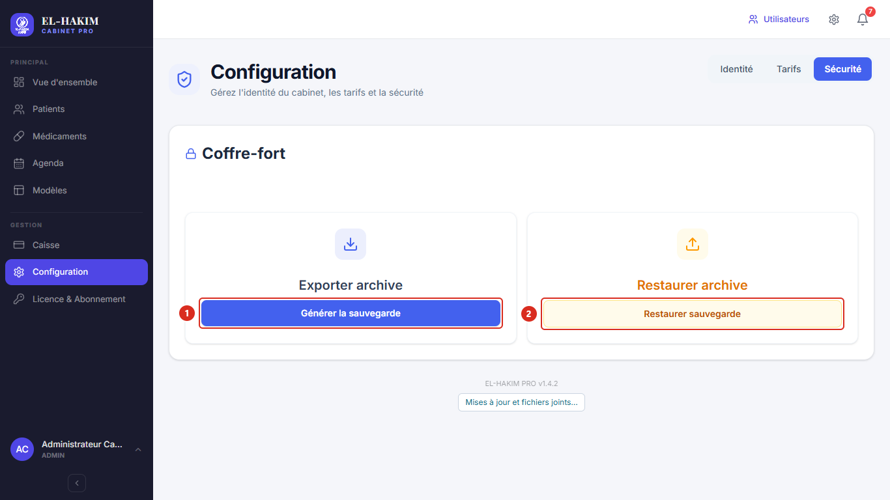
Faites la sauvegarde sur le serveur lui-même, pas depuis un poste client : depuis un poste client, la sauvegarde ne fonctionne pas.
10.2 Restaurer une sauvegarde
- Cliquez sur Configuration, onglet Sécurité.
- Sous Restaurer archive, cliquez sur Restaurer sauvegarde.
- Choisissez le fichier de sauvegarde (.zip). À la fin, l'écran se recharge.
La restauration remet les données telles qu'elles étaient le jour de la sauvegarde. Faites d'abord une sauvegarde des données actuelles, au cas où.
11. Désinstaller EL-HAKIM PRO
- Fermez complètement EL-HAKIM PRO.
- Ouvrez les Paramètres de Windows, puis Applications. Cliquez sur EL-HAKIM PRO, puis sur Désinstaller.
- La page Vos données s'affiche. Par défaut, toutes vos données sont conservées dans le dossier d'installation : une réinstallation les retrouvera.
- Ne cochez Supprimer aussi définitivement toutes les données de ce poste que si vous voulez tout effacer.
- Continuez jusqu'à la fin.
La suppression des données est irréversible. Les sauvegardes déjà faites (dossier EL-HAKIM PRO Sauvegardes) ne sont pas supprimées.
12. Dépannage et assistance
| Ce que vous voyez | Que faire |
|---|---|
| Base de données inaccessible au démarrage | Fermez EL-HAKIM PRO, attendez quelques secondes et rouvrez-le. Sinon, redémarrez l'ordinateur. Cliquez sur Réessayer. |
| Licence requise ou expirée | Voir le chapitre « Licence ». Vos données sont conservées. |
| Un poste client ne se connecte pas | Voir « Utiliser EL-HAKIM PRO sur plusieurs postes ». |
| Les heures des rendez-vous sont décalées | Réglez le fuseau horaire de Windows sur l'Algérie, puis redémarrez EL-HAKIM PRO. |
| La recherche de mise à jour échoue | Vérifiez la connexion Internet. EL-HAKIM PRO refera la recherche plus tard. |
12.1 Contacter l'assistance CWL-SOFT
Si le problème continue, contactez CWL-SOFT, votre fournisseur d'EL-HAKIM PRO. Préparez avant d'appeler :
- la version d'EL-HAKIM PRO (affichée en bas de l'écran Configuration) ;
- le CODE MACHINE (écran Licence & Abonnement) ;
- le message d'erreur exact (une photo de l'écran suffit).